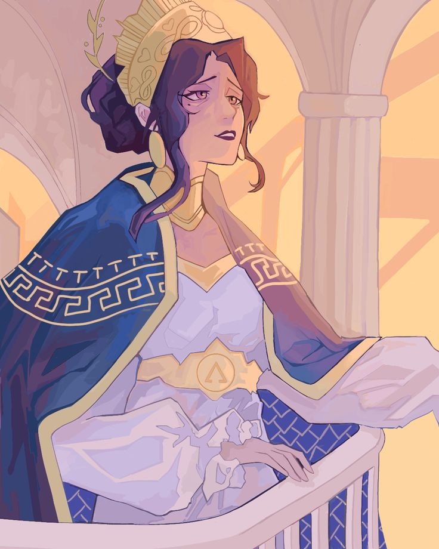
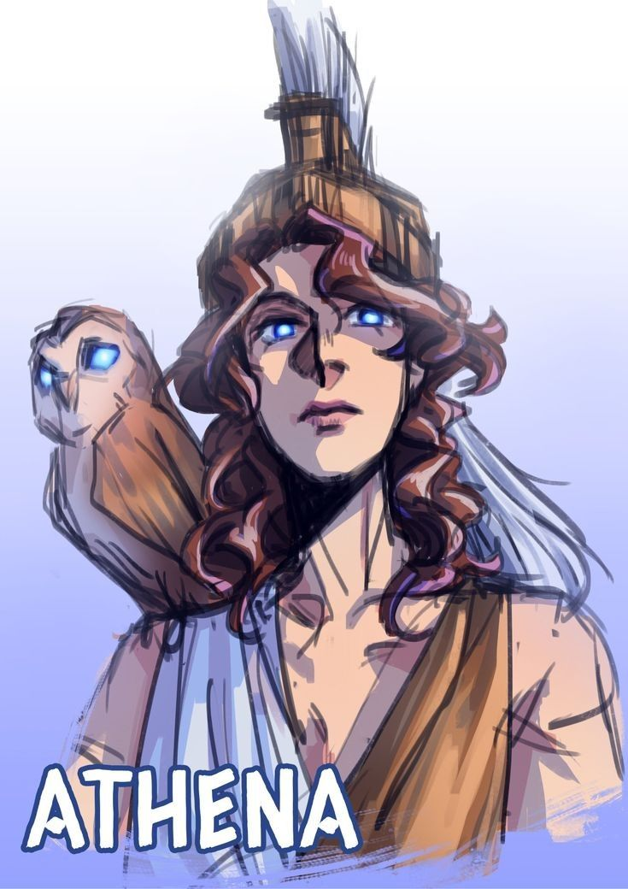
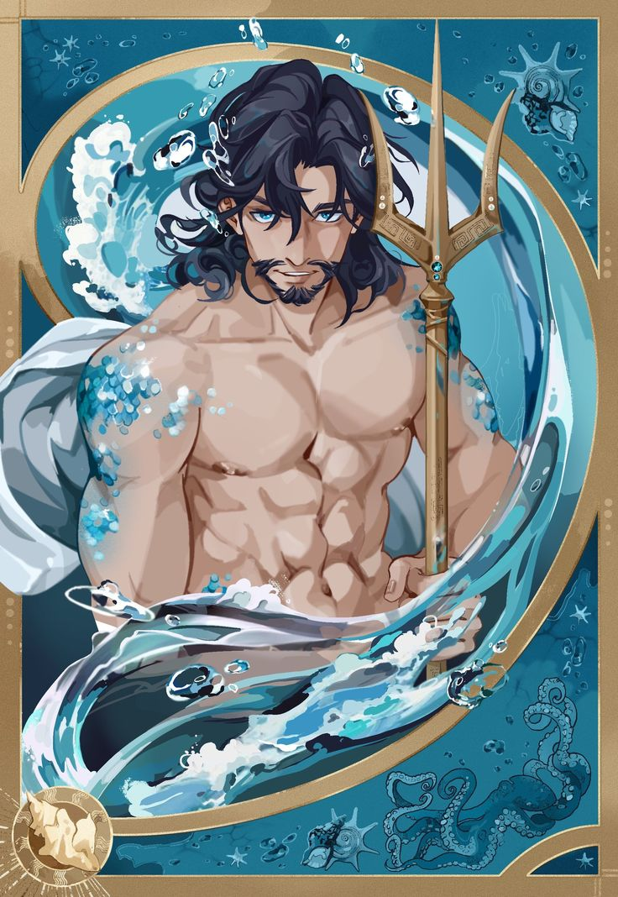
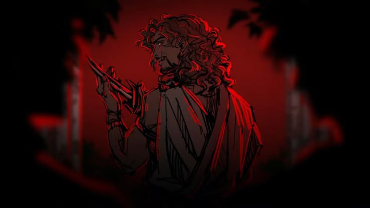
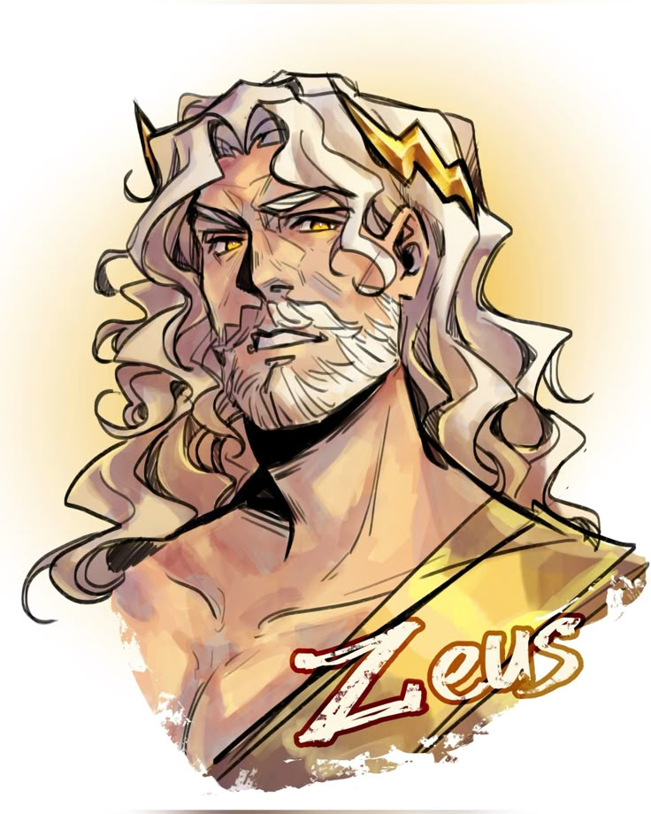
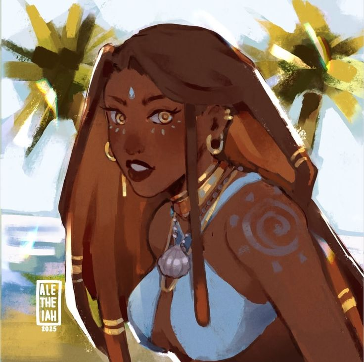
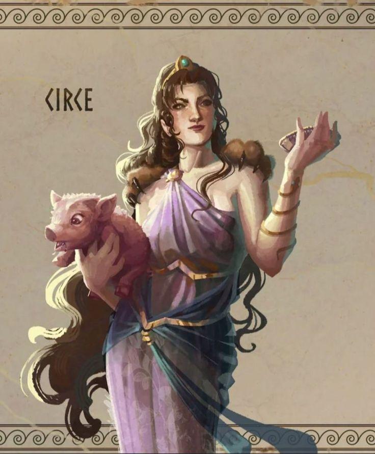

Odysseus
The clever, brave, and often cunning Greek hero of the story, King of Ithaca, trying to return home after the Trojan War. Known for his wit, leadership, and resilience.
The clever, brave, and often cunning Greek hero of the story, King of Ithaca, trying to return home after the Trojan War. Known for his wit, leadership, and resilience.

Odysseus’ loyal wife, who waits faithfully in Ithaca for 20 years, cleverly fending off suitors trying to claim her hand.

The son of Odysseus and Penelope, who grows from a passive boy to a brave young man, seeking news of his father.

The goddess of wisdom and war, and Odysseus’ divine protector. She often intervenes to help him and his family.

The god of the sea, who holds a grudge against Odysseus for blinding his son, Polyphemus the Cyclops, and constantly tries to stop his journey home.

The most arrogant and aggressive of Penelope’s suitors; he leads the plot to kill Telemachus and is first to die when Odysseus returns.

King of the gods, who occasionally intervenes in mortal affairs, maintaining a balance between helping and punishing Odysseus.

A beautiful nymph who keeps Odysseus on her island, Ogygia, for 7 years, offering him immortality if he stays, but he longs to return home.

A powerful enchantress who turns Odysseus’ men into pigs, but later helps him by warning about future dangers.